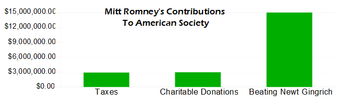

Comic JK 863
When I Feel Like It
⇤
<
?
>
⇥

⇤
<
?
>
⇥
Forum
.
RSS
.
Digg
.
Facebook
.
Reddit
.
Twitter
.
Stumbleupon
Enter your thoughts on number 863 here. Please, no spamming, trolling, or phreaking. Beating Santorum would be better... No trolling? You post a blatantly political piece and expect there'll be no trolling? I dunno whether that's cutely naive, or insanely retarded. > ^^troll >> ^^hater >>> ^^trollerer >>>> ^^Drow! >>>>> ^^ Up-arrow users Arguably, beating Newt Gingrich was more important than taxes or charity. I only wish the beating was more physical and repetitive. > <sigh of relief> >> Is that $15M of his own money? >>> No, $15M was spent on anti-Newt ads in Florida, mostly contributed by Super-PACs, so little of that money came directly from Romney. I rate this comic as "Mostly False." >>>> Something untrue on the internet? I can hardly believe it! (Read that in your favorite sarcasm font.) >>>>>Comic Sans? >>>>> I would consider Mitt's campaign activities (excuse me, uncoordinated activities) to be among his contributions to society >>>>>> The SuperPAC wouldn't have spent the 15M if not for Mitt's campaign activities. Plus, who is arguing that these politicians aren't directing the SuperPAC cash? Your mother supports Mitt Romney. Yes she does. But so do I. > You Monster! >> Being a republican does not automatically make one a monster. >>> Tell that to the ultra-fanatic-liberal-atheist segment of society. >>>> You forget the communist/socialist/european part (clearly, that's ALL exactly the same)... >>>>> Yeah! And they're coming to take your job! And give it to some immigrant who only speaks the language of living in the ghetto! How many of you Romney supporters are actually pro-Romney, as opposed to being anti-Gingrich? > I'm anti-democracy because people in general are fucking stupid. >> So were the founding fathers. That's why they created a republican bitch. fcuk klfjdklsjaf;sljfsdljk >> Wow! Stupid must be tired of all those people fucking him inside general. ouch...